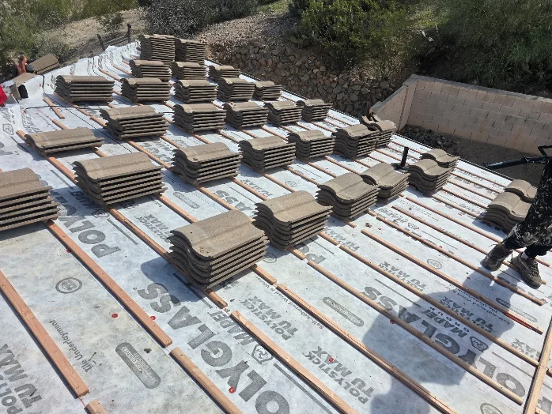
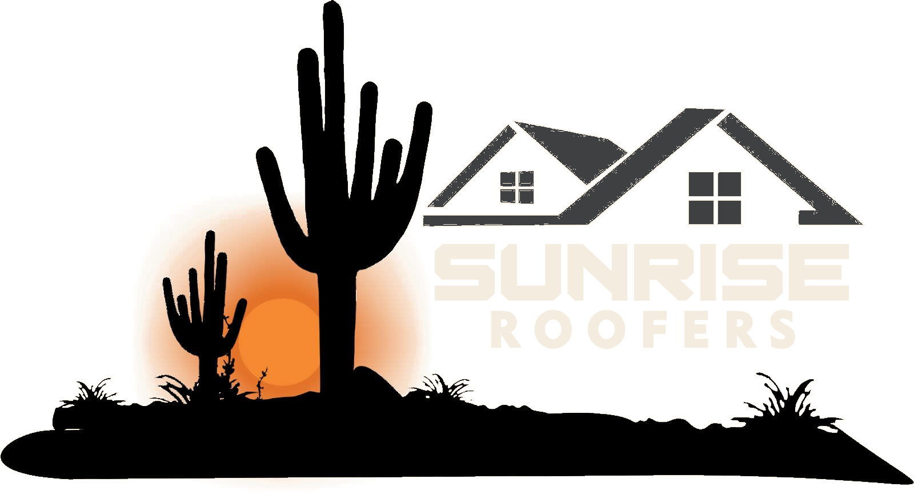
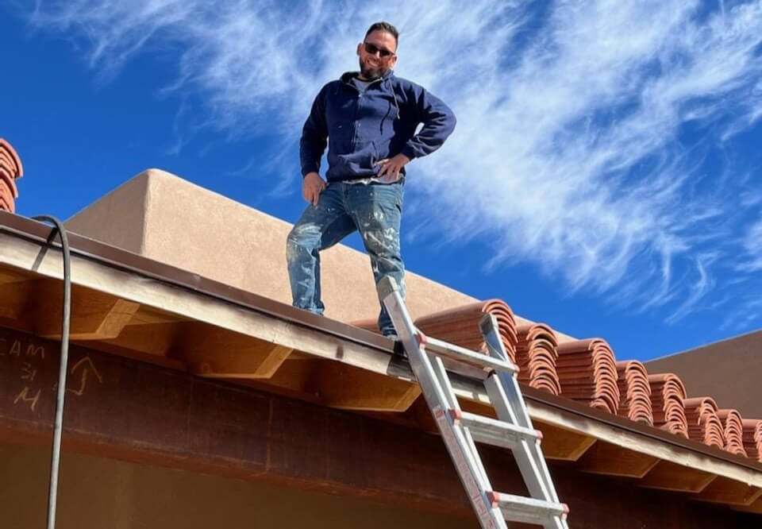
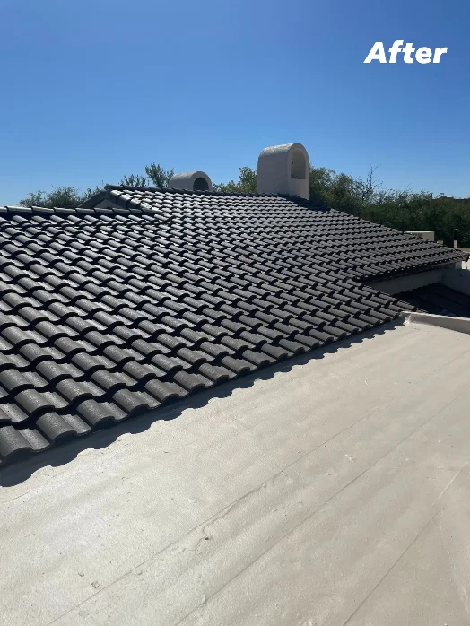
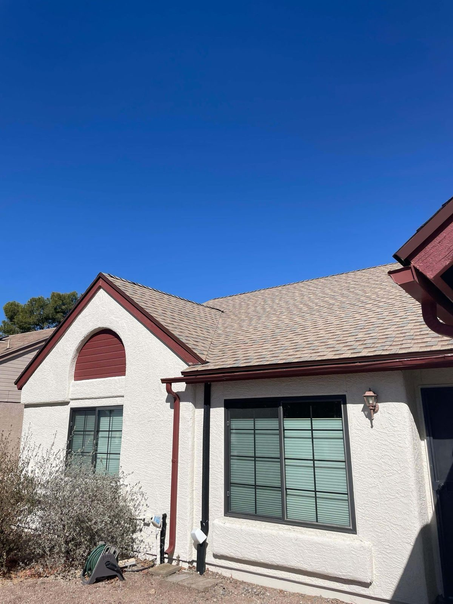
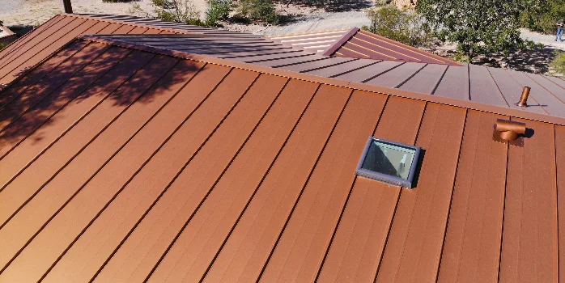
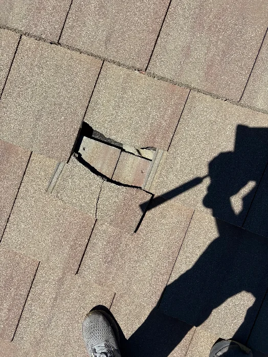
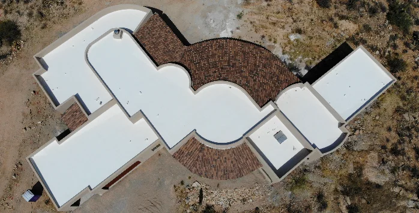
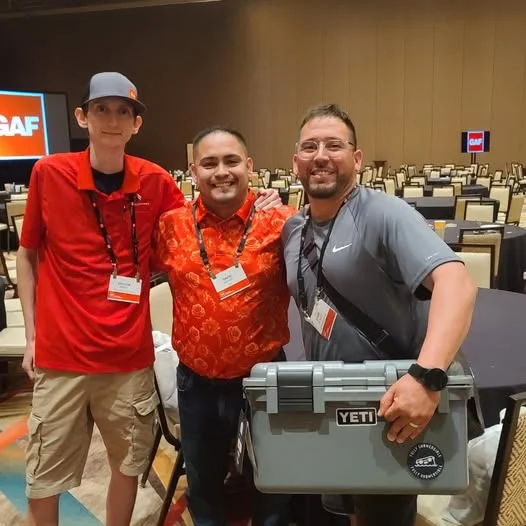

Our Specialty

Full Roof Replacement
Complete tear-off, new high-temp underlayment and a tile, shingle or metal roof built to take Arizona's sun for decades. Itemized quote, financing available.
Learn MoreSUNRISE ROOFERS Tucson's Trusted Roofing Experts

Roofing Done Right by a Tucson Family
Trusted by Tucson homeowners, property managers & businesses
Family-Owned Tucson Roofing Company · ROC #358079
Sunrise Roofers is a Tucson family business with a crew that's been on these roofs 20-plus years and runs every job like our name's on it, because it is. Our specialty is the whole job: tear-off, new underlayment, and a tile, shingle or metal roof that finally quits leaking, with an itemized price and financing if you want it. We fix leaks too, when a repair is honestly what it needs. No pressure, no closers, no sign-today games.
Mornin'…
We've caught more sunrises up here than on our own porches.

Meet the Team
Sunrise Roofers started because we got tired of watching folks get talked into roofs they didn't need. Roofing's a family trade for us, and our team has spent its career on Arizona rooftops — learning firsthand what actually holds up against our heat and monsoons. Quick leak or a full tear-off, one of our own roofers comes out to look at it, tells you straight what it needs, and gives you a price that doesn't move. No salesmen, no runaround — just a local crew that takes every job personally.
What We Do
Most of our work is full tear-offs and new roofs in tile, shingle and metal. We'll still tell you straight if yours only needs a repair or a coating — but when it's time for a new roof, you want the crew that puts them on every week.

Complete tear-off, new high-temp underlayment and a tile, shingle or metal roof built to take Arizona's sun for decades. Itemized quote, financing available.
Learn More
Tile looks fine but leaks? Usually the underlayment is done. We lift the tile, lay new underlayment and set it back, or replace the whole tile roof when it's time.
Learn More
Tear-off to the deck, decking repairs, new underlayment and architectural shingles, with the attic ventilation sorted so the new roof lasts.
Learn More
Standing-seam metal that bounces the heat and shrugs off monsoons — for Tucson homes and businesses alike.
Learn More
Leaks, busted flashing, storm damage, cracked tile — we track down what's actually wrong and fix it, and tell you honestly when a roof is past repairing.
Learn More
Flat roof replacement, coatings and commercial systems for homes, HOAs, offices and warehouses, scheduled around your hours.
Learn More
Why Choose Sunrise Roofers
A lot of roofing outfits in town are national chains chasing a sales number. We're not. We're a family-owned, owner-led Tucson crew — and whether it's a full replacement or a stubborn leak, you get a roofer who's done this a thousand times and cares about getting it right the first.
Rated 5.0 across 56 Google reviews from Tucson homeowners & property managers.
I had a great experience with Eddies from Sunrise Group LLC. On Sunday, November 1st, my home experienced a roof leak, even though the house is only about five years old. Eddies came out that same day and thoroughly inspected everything in a very professional manner. He also provided me with a clear estimate right away. I truly appreciate his prompt response, professionalism, and honesty. Although I haven’t decided on the next steps yet, I am very impressed with his work and highly recommend Edith and Sunrise Group LLC!
Hoang Pham Family, 5-star Google review, November 2026
We hired Sunrise Roofers at the recommendation of another contractor we had used in Oro Valley. From the first inquiry, Eddie, the owner, was professional, responsive and very personable. He followed through on a timely estimate, scheduling around our needs, and completed the work as promised. His team did an excellent job on replacing the roof underlayment, tiles, and skylights. We received photos and a video of the roof before and after the work was completed. He was also flexible and accomodating when we had a slight change in the project. Eddie was wonderful to work with and we would highly recommend him and his company.
James Jones, 5-star Google review, October 2026
Eddie did a great job on my project. My wife and I didn't expect are home built 4 years ago to lose tiles but the recent wind we experienced in Marana had other plans. He came the day of the incident on short notice and provided a detailed explanation of what he was going to do. Not only did he replace the 6 tiles that fell, but also re-secured the whole row of 26 tiles with longer nails the builder didn't use. Highly recommend if you want someone reliable with good communication, efficient and quality work.
Jason Galvez, 5-star Google review, October 2026
Eddie helped me at a difficult time with roof damage and flooding in one of my bedrooms. To start off with, his customer service was great from start to finish. I was shown pictures before and after and I am truly amazed at the work he did on my entire roof. Beautiful roof work was completed and I appreciate that he covered my roof due to more rains to hold me over until work could be done. I am forever grateful to him and highly recommend his roofing company! It’s hard to find trustworthy people and I give him as a recommendation for your roofing needs! I appreciate his compassion in a very difficult time in my life as this crisis happened in my home.
Cristina Navarro, 5-star Google review, September 2026
This is a great company. I had a roof leak and needed a quick response for a repair. Eddie was very easy to work with. He knows his business and when he examined the roof I was shown pictures of the damage and wear on the roof. The price estimates were accurate and very fair for the amount of work that was done. We had the entire roof done. Very satisfied with the work. Again he has a great team that know what they are doing. Always letting you know if they found other problems along the way and taking pictures of what was wrong. Highly recommend Sunrise Roofers for any and all roofing problems/jobs.
Bill Jarvis, 5-star Google review, September 2026
A couple of my neighbors used Sunrise Roofers and were very satisfied so I enlisted Sunrise to replace my 20 year old roof. Eddie, the owner, has been in roofing his whole life and is extremely knowledgeable. Eddie's crew has been with him for years and did a fabulous job replacing my roof (1,822 sq. ft home). The crew arrived early and worked through each day with a short lunch break. They really know roofs and materials and I couldn't be more pleased that I went with Sunrise Roofers.
Sue G, 5-star Google review, September 2026
Great experience with Eddie!
Rob Friedberg, 5-star Google review, August 2026
We recently had a roof leak repaired with Sunrise Roofers LLC and could not be more pleased with the quality of work and our overall experience! What would usually be a stressful process was made painless and addressed quickly. Eddie was so professional and communicative every step of the way. He came out quickly to do an estimate and it was competitively priced. He provided a video as part of the inspection so we could see exactly what was happening on the roof and why he was making the recommendations made for repair. He even took the time to educate us on the cause of the leak and how to prevent it in the future. We were also provided with progress pictures as the work was being completed. His team was pleasant and they cleaned up as they worked. Eddie found roof tiles that match so well you can’t even tell we had them replaced in that section. It’s so wonderful to be able to enjoy the rain now without worrying about the roof! We highly recommend Sunrise Roofers LLC and will continue to work with them as needed in the future!!
Brittany Rychetsky, 5-star Google review, August 2026
Resources
Straight answers to what folks around Tucson ask us most. Still wondering about something? We're a phone call away.
Ask Us AnythingLet's Talk
Tell us what's going on up there — an old roof that's due for replacement, a leak, or storm damage — and we'll get you on the books for a free inspection.
Where We Work
Based in Tucson and covering a 40-mile radius — from Oro Valley and Marana down through Sahuarita, Green Valley and Vail, out to Benson.
Not sure if you're in range? Just ask — if you're anywhere in the Tucson metro, odds are we've got you covered.
Check Your Address